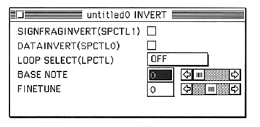

SIGNFRAGINVERT(SPCTL1)
Inverts the sign bit of the sound input data.
DATAINVERT(SPCTL0)
Inverts the sound input data except for the sign bit.
LOOP SELECT
Select the loop format.
・FORWARD ・REVERSE ・ALTERNATE ・OFF
BASE NOTE
Set the base note.
You can set a value between 0 and 127.
This data automatically loads and sets the BASENOTE included in the AIFF when an AIFF file is read.
FINETUNE
Set the fine tune.
You can set a value between -64 and 63.
This data automatically loads and configures the FINETUNE included in the AIFF when the AIFF file is read.